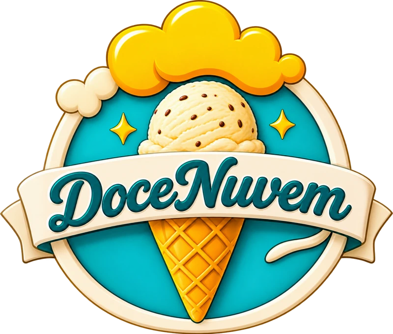

doce nuvem
Passeio 360°
Como chegar
WhatsApp
Analógico da esquerda:
frente e trás
· da direita:
direção
· ou clique nos círculos do chão
Frente · Trás
Início
Fim
Direção
Passeio gravado no
endereço anterior
. Agora estamos na Rua Rio Branco, 517 · Centro · Apucarana-PR.

Preparando o passeio…